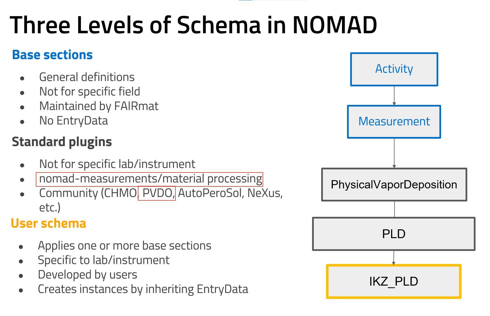

Levels of schemas in NOMAD¶
It is important to understand the structure and relationship of different types of schemas in NOMAD. Here we break down the levels of schemas and how they interact. For detailed information, please visit the official NOMAD documentation.
Types of Schemas in NOMAD¶
NOMAD categorizes its schemas into multiple levels, each serving distinct purposes while ensuring consistent data organization and interoperability:
-
Basic Architecture Sections: These define the overall structure of any entry within NOMAD, regardless of the particular data type. They provide a shared, high-level framework applicable across different use cases, ensuring that every entry adheres to a consistent format.
EntryDataandArchiveSectionare the two relevant classes to be mentioned here. Every entry in NOMAD must inherit fromEntryData, whenever a class is only used as a subsection composed within a more general one, inheriting fromArchiveSectionis enough. -
Base Sections: These are central to NOMAD's data model and are designed to maintain interoperability between different database entries. The base sections follow an entity-activity model tailored for materials science, capturing essential relationships between key entities like samples, instruments, processes, measurements, analyses, experiments, and simulations. The goal is to provide standardized structures for data representation.
Note
Base sections in NOMAD are abstract and should not be instantiated directly. Instead, users must implement these sections in their own schemas (referred to as user schemas) by inheriting from a base section and nomad.datamodel.EntryData. Users are strongly encouraged to use the most specialized section available for their use case..
-
Community/Standard Plugins: FAIRmat offers standardized schemas for common methods, processes, and instruments that are generalized and not tied to any individual lab or setup. These schemas are derived from recurring patterns identified across user schemas. Users can inherit from these standard plugins in a similar manner as the base sections, further specializing them as needed while still maintaining a consistent structure for broader community use. FAIRmat's Area A for synthesis data provides two community plugins, NOMAD Measurements and NOMAD Material Processing.
-
User Defined Sections: These schemas are developed by users and are tailored for a method or an instrument, a lab, or a research institute. They build upon the base sections and community plugins, tailoring them to meet specific research needs. In this level, users can define more specialized structures that directly reflect the unique characteristics of their experiments or simulations.
How These Schemas Relate to Each Other¶
The relationships between these schema levels can be visualized as a layered model:
-
Basic Architecture and Base Sections: At the core, ensuring interoperability and defining the primary structures.
-
Community/Standard Plugins: Inherit and specialize the base sections and provide generalized versions of common user schemas, making them clearly shaped on distinct fields of materials science while still allowing broad applicability across the community.
-
User Schemas: Inherit and specialize community plugins sections, if available, or the base sections according to given requirements.
Encouraged Usage¶
NOMAD encourages users to first explore the available community/standard plugins and base sections before developing their own schemas. By doing so, they can maximize interoperability and benefit from established structures, while still retaining the flexibility to adapt the schema to their unique needs.
The figure below illustrates these schema levels and the recommended workflow for schema development within NOMAD.
In next documentation sections, an overview of the available methods will be provided.
